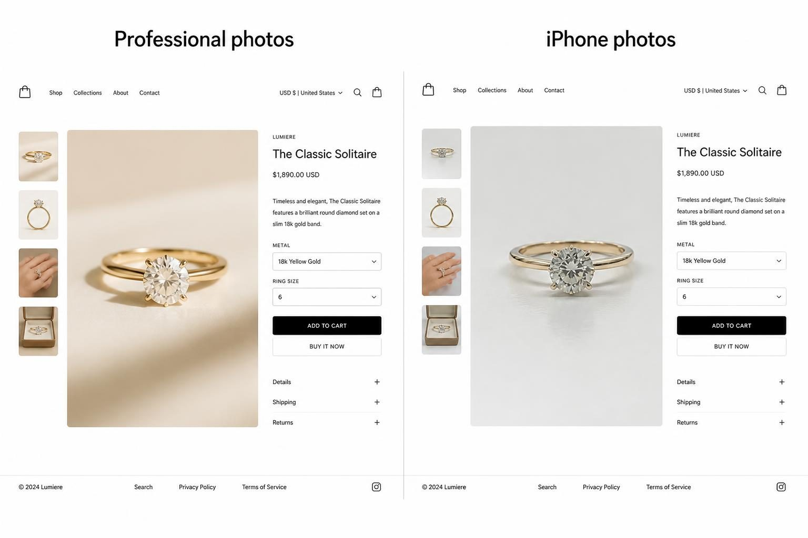
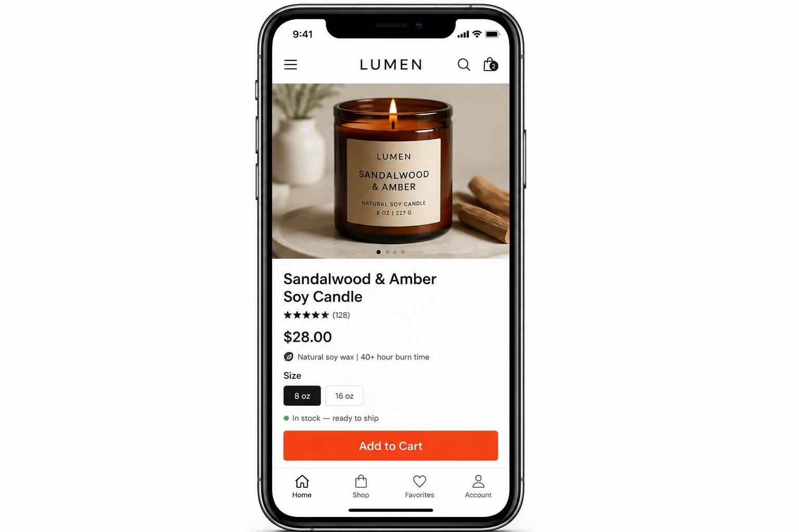
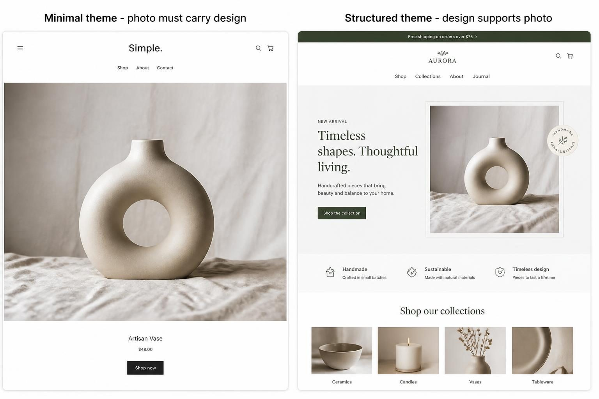
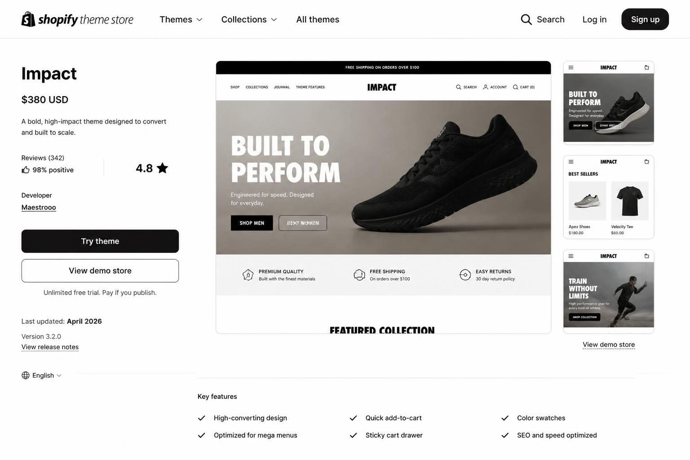

BEST SHOPIFY THEMES 2026: HOW TO CHOOSE A THEME THAT ACTUALLY SELLS YOUR PRODUCTS
The best Shopify themes in 2026 share three things: they load fast on mobile, they include the conversion features your catalog size actually needs, and they look professional without requiring magazine-quality photography. That combination is rarer than most theme roundups suggest - and choosing wrong can quietly cost you thousands in lost sales every year.
Here is what most guides will not tell you: a theme that loads one second slower can drop your conversion rate by 7%. For a store doing $10,000 per month, that is $8,400 per year lost to a pretty-but-slow theme. And yet most business owners spend hours comparing color palettes while completely ignoring speed scores and mobile checkout flow.
Sound familiar?
If you have been scrolling through theme previews, saving favorites, and feeling more confused with each click - this guide is for you. I am going to break down exactly what matters when choosing a Shopify theme in 2026, which features are worth paying for versus which are marketing fluff, and how to match your theme to your actual business (not someone else's aesthetic goals).
By the end, you will have a clear framework for making this decision once - and confidently - so you can get back to the work that actually grows your store.
---
WHY YOUR THEME IS A REVENUE DECISION, NOT A DESIGN DECISION
Most store owners treat theme selection like decorating a room. They browse, save options they find pretty, and eventually pick whatever "feels right." This is backwards.
Your Shopify theme is infrastructure, not decoration.
Here is what your theme actually controls:
- How fast your pages load (which directly affects whether Google shows you to shoppers)
- How your products display on mobile (where most of your customers are shopping)
- Whether your checkout flow helps or hurts conversions
- Which features you get natively versus which require paid apps
- How your store looks with your actual photography (not the demo photos)
Every one of these factors affects revenue. A gorgeous theme with poor mobile performance will cost you sales. A basic theme with fast load times and a clear checkout will outperform it.
The pattern I see constantly: business owners spend $350 on a premium theme because the demo looked stunning, then wonder why their conversion rate is lower than before. The demo used professional photography. The demo had products perfectly sized and described. Your store has iPhone photos and descriptions you wrote at midnight.
Match your theme to your current assets, not your aspirational aesthetic.
This does not mean settling for ugly. It means being honest about what you have to work with right now - and choosing a theme that makes your actual products look their best.

---
THE MOBILE-FIRST TEST THAT REVEALS EVERYTHING
Mobile devices account for the majority of Shopify purchases. Not "a lot." The majority. Shopify confirmed this back in 2017, and the gap has only widened since.
This means your theme choice must start with mobile - not end there.
Here is how to actually test this (not the preview mode - the real thing):
Step 1: Install the theme on your store without publishing it. Shopify lets you have multiple themes installed.
Step 2: Add your real products. Not demo products. Your actual photos, your actual descriptions, your actual prices.
Step 3: Get the preview link and open it on your actual phone. Not the "mobile preview" in the Shopify editor - load the real URL on your iPhone or Android.
Step 4: Try to complete a purchase. Add something to cart. Go through checkout. Time how long it takes. Notice where you get frustrated or confused.
Most store owners skip this step entirely. They look at the mobile preview inside the Shopify admin, think "looks fine," and publish. Then they wonder why their mobile conversion rate is half their desktop rate.
What to look for in mobile testing:
- Does the navigation make sense with one thumb? (This is called thumb-zone optimization)
- Can you easily tap the add-to-cart button without accidentally hitting something else?
- Do product images load quickly, or do you see blank spaces while waiting?
- Is the checkout flow smooth, or does it feel clunky on a small screen?
- Can you filter products easily if you have a larger catalog?
If the mobile experience frustrates you - the person who knows this store inside out - think about how a first-time visitor feels.
A theme that looks stunning on a 27-inch monitor but frustrates mobile shoppers is not a good theme. It is an expensive mistake.

---
THE SPEED FACTOR THAT DIRECTLY AFFECTS YOUR REVENUE
Page speed is not a technical nicety. It is a conversion factor with real dollar impact.
Here is the math: a one-second delay in page load time can reduce conversions by 7%. For a store doing $120,000 per year, that means a slow theme could be costing you $8,400 annually.
Dawn - Shopify's flagship free theme - scores approximately 92 on Google PageSpeed. That is the benchmark. If you are considering a theme that scores significantly lower, you need a very good reason (and the conversion features to justify it).
How to check a theme's speed with your actual content:
Step 1: Install the theme without publishing.
Step 2: Add your real products, your actual images, your real content.
Step 3: Go to Google PageSpeed Insights and enter your preview URL.
Step 4: Look at the mobile score specifically. Desktop is less important because most traffic is mobile.
Target scores: 70+ on mobile is acceptable. 80+ is good. 90+ is excellent.
Important caveat: If your speed score tanks after adding your content, the theme might not be the problem. Large, unoptimized images are the most common culprit. Before blaming the theme:
- Compress your images (tools like TinyPNG work well)
- Use Shopify's recommended image dimensions
- Limit how many products you display on collection pages
- Remove apps you are not actively using
A fast theme with unoptimized images will still be slow. Theme speed matters, but it is not the only factor.
The themes that consistently score well on speed - Dawn, Ride, and Sense in the free tier; Impact and Impulse in premium - are built on Shopify's Online Store 2.0 architecture. This architecture prioritizes performance in ways older themes simply cannot match.
If you are looking at a theme and cannot find any speed data in reviews or the theme listing, that is a red flag. Quality themes advertise their performance.
---
FREE THEMES HAVE GOTTEN SIGNIFICANTLY BETTER - HERE IS WHEN THEY ARE ENOUGH
The gap between free and premium Shopify themes has closed dramatically. In 2026, Shopify's free themes are genuinely excellent - not "good for free," but actually excellent.
Dawn remains the gold standard: fast, clean, mobile-first, and built on the latest architecture. For a store with under 50 products and straightforward needs, Dawn is not a compromise. It is a smart choice.
Here is when free themes are genuinely enough:
- Your catalog is under 50 products
- You do not need complex filtering (by size, color, material, etc.)
- Your products do not require tabbed information sections (ingredients, care instructions, sizing charts)
- You do not need a mega menu for multiple collections
- Your business model does not require built-in upsells or subscription features
Other strong free options by store type:
For minimal, curated product lines (under 30 products): Dawn, Sense
For larger catalogs needing collections focus: Ride, Refresh
For editorial or story-driven brands: Publisher, Colorblock
Here is when you genuinely need a premium theme:
- You have 100+ SKUs and need robust filtering
- You need mega menus to organize complex collections
- Your products require detailed tabbed information (very common for skincare, supplements, or technical products)
- You want built-in upsell and cross-sell features without apps
- You need advanced promotional features for seasonal campaigns
Do not pay $350 for features you will never use. A boutique with 20 products does not need enterprise-level filtering. Conversely, a store with 200 SKUs trying to force Dawn to do what it was not built for will frustrate both themselves and their customers.
The honest question to ask: What does my store actually need today, not what might it need someday?
If you answered "under 50 products, simple filtering, straightforward product pages" - start with free. You can always upgrade later, and you will have real data about what you actually need.
---
THE PHOTOGRAPHY PROBLEM NO ONE TALKS ABOUT
Here is a truth most theme guides avoid: your product photography should influence your theme choice.
Premium themes like Broadcast and Prestige are designed assuming you have stunning, professional imagery. The layouts are minimal. The design elements are sparse. The photography is supposed to carry the entire aesthetic.
What happens when you put iPhone photos into a minimal, gallery-style theme?
They look amateur. The whitespace that looked elegant in the demo now looks empty. The lack of design structure means nothing is hiding the imperfections in your images.
If your photos are good-not-great (which is most small business reality), choose a theme with more structure.
Themes with more design elements - text hierarchy, decorative sections, structured layouts - give your photography support. They do not rely solely on imagery to carry the aesthetic.
Signs you need a more structured theme:
- Your product photos have inconsistent lighting
- Your backgrounds are not perfectly white or styled
- You do not have lifestyle imagery - just product shots
- Your photos work better when they are smaller on the page
Themes that work better with imperfect photography: Sense, Colorblock, Studio
Themes that demand excellent photography: Prestige, Broadcast, Spotlight
This is not about settling. It is about being strategic. Work with what you have today. As your photography improves, your theme can evolve with it.

---
THE APP MATH THAT CHANGES YOUR TOTAL COST
A $350 premium theme might actually be cheaper than a free theme. Here is why.
Free themes have limitations. When you hit those limits, you add apps. Apps cost money - often $10-50 per month each. Those monthly fees compound fast.
Common features that require apps on basic themes:
- Product tabs (ingredients, care instructions, sizing) - $5-15/month
- Upsell and cross-sell widgets - $10-30/month
- Advanced filtering - $15-50/month
- Free shipping progress bar - $5-10/month
- Quick view popups - $5-15/month
- Size guide functionality - $5-10/month
If you need three of these features, you are looking at $30-75 per month in apps. That is $360-900 per year.
A premium theme with these features built in pays for itself in months, not years.
Here is how to calculate your real theme cost:
Step 1: List the features you absolutely need (not want - need).
Step 2: Check which features are included in the free theme you are considering.
Step 3: Price out apps for any gaps.
Step 4: Calculate: Free theme + (monthly app costs × 12) = first year cost.
Step 5: Compare to premium theme one-time cost.
The cheapest theme is rarely the one with the lowest sticker price.
If you find yourself needing multiple apps to fill gaps in a free theme, a premium theme that includes those features natively will often be cheaper, faster, and more reliable.
This is where premade Shopify themes with built-in features become genuinely cost-effective. When your theme already includes a mega menu, slide-out cart drawer, free shipping progress bar, and cart upsell suggestions, you are not paying for apps. You are not troubleshooting app conflicts. And your site stays faster because you are not loading multiple third-party scripts.
---
THIRD-PARTY THEMES: WHAT YOU NEED TO KNOW BEFORE BUYING OUTSIDE SHOPIFY
Not all Shopify themes are created equal - and this is not about quality. It is about where they come from.
Shopify Theme Store themes are vetted by Shopify for:
- Online Store 2.0 architecture compliance
- Speed standards
- Ongoing updates and maintenance
- Support requirements
Third-party marketplace themes (ThemeForest, Creative Market, etc.) vary wildly. Some are excellent. Some will cause you endless headaches.
Questions to ask before buying a third-party theme:
When was it last updated? Themes not updated in 6+ months may have compatibility issues with new Shopify features.
Is it built on Online Store 2.0? Older architecture themes will not work with Shopify's newest features.
What do the recent reviews say? Look specifically for comments about support responsiveness and update frequency.
Does the developer have multiple successful themes? One-off themes from unknown developers are higher risk.
What happens if the developer disappears? Third-party themes have no guarantee of ongoing support.
The Shopify Theme Store is not the only option, but it is the safest option for most store owners.
If you buy outside the Shopify Theme Store, you are taking on additional risk. That can be worth it for a specific feature set or design style - but go in with eyes open.
For most small business owners without a developer on retainer, staying within the Shopify ecosystem (or choosing premade themes from established sellers who specialize in ecommerce templates) reduces your technical headaches significantly.

---
THE STEP-BY-STEP THEME SELECTION PROCESS
Stop scrolling aimlessly through theme previews. Use this process to make a confident decision in a few hours - not weeks.
Step 1: Audit your current situation (15 minutes)
Count your total products and SKUs. Note how many collections or categories you have. Assess your product photography honestly - is it professional, decent, or needs work? List must-have features. If you have an existing store, check your current speed at PageSpeed Insights.
Step 2: Define non-negotiables versus nice-to-haves (10 minutes)
Create two columns. Non-negotiables are features your store literally cannot function without. Nice-to-haves are features you want but could work around. Be honest - most "must-haves" are actually nice-to-haves.
Step 3: Start with free themes (30 minutes)
Go to the Shopify Theme Store, filter by Free, and preview themes that match your niche. For stores under 50 products without complex filtering, a free theme will likely work beautifully.
Step 4: Test drive before committing (1-2 hours)
Add the theme to your store. Add your actual products - not demo content. Check how your real descriptions look, how your real photography displays, how your collection pages work with your actual product count. View it on your phone - the real URL, not just mobile preview.
Step 5: Run a speed test with your content (15 minutes)
After customizing with real content, run PageSpeed Insights on your preview URL. Target 70+ on mobile minimum. If scores drop dramatically after adding your content, optimize your images before blaming the theme.
Step 6: Check theme update history (5 minutes)
Look at when the theme was last updated. Themes not updated in 6+ months may have compatibility issues.
Step 7: Calculate real cost (10 minutes)
Theme price plus apps you will need to fill gaps versus a theme that includes those features natively. Sometimes the premium option is actually cheaper.
Step 8: Make the decision and commit for 6 months
Theme-hopping kills momentum. Choose, customize properly, and give it real data before reconsidering. Your time is better spent on marketing than endless theme tweaking.
---
WHAT A GREAT SHOPIFY THEME ACTUALLY INCLUDES IN 2026
The features that separate genuinely good themes from mediocre ones have shifted. Here is what to look for - and what to question.
Conversion-focused features that actually matter:
Slide-out cart drawer. Customers can view their cart without leaving the page. This reduces friction and keeps them shopping.
Free shipping progress bar. Shows shoppers how close they are to free shipping. Simple psychology, but it works - average order values increase when customers can see they are $15 away from free shipping.
Cart upsell suggestions. Related product recommendations inside the cart. This is where upselling actually happens - when someone has already committed to buying.
Mobile-optimized checkout flow. Not just "mobile responsive" - actually designed for thumb-zone navigation and one-handed completion.
Mega menu support. If you have multiple collections, a proper dropdown that showcases them beautifully (not a cramped text list) matters for navigation.
Features that sound impressive but may not matter for your store:
AI-powered personalization. Shopify introduced AI features in 2025, and themes now advertise AI capabilities. For large stores with thousands of products, this matters. For a boutique with 30 products, it adds complexity without proportional benefit.
Infinite scroll on collections. Sounds modern, but can actually hurt conversions if customers cannot easily return to where they were.
Animation-heavy designs. Often slows page load for minimal benefit.
The question to ask: Does this feature help my specific customers buy more easily, or does it just look good in a demo?
If you want the conversion features without the complexity, [Jane's premade Shopify themes](https://www.switzertemplates.com/shopify-theme-templates?utm_source=blog&utm_medium=content&utm_campaign=best-shopify-themes-2026) include the practical stuff - mega menu, slide-out cart drawer, free shipping progress bar, cart upsell suggestions - without the bloat. They are full luxury ecommerce website designs, not just a basic framework you have to figure out yourself. They come in four color palettes and include everything you need to go live, including editable Canva logo and banner files.
---
MATCHING YOUR THEME TO YOUR SPECIFIC PRODUCT TYPE
Different products have different display needs. Here is how to think about theme selection based on what you actually sell.
Handmade jewelry or accessories (small catalog, visual brand)
Your photography is your marketing. But if your photos are iPhone-quality rather than professional, choose a theme with more design structure to support them. Look for: clean product grids, zoom functionality, and if you sell pieces in multiple finishes or materials, color swatch support.
Recommended approach: Start with Sense or Dawn if your catalog is under 30 pieces. If you need variant swatches and better filtering as you grow, upgrade to a theme with those features built in.
Clothing and apparel (size and color variants)
You need robust filtering and clear variant selection. Size guides integrated into product pages save you support headaches. Quick-view functionality helps shoppers browse without loading new pages for each item.
Recommended approach: If under 50 products, a structured free theme can work. Above that, a premium theme with advanced filtering becomes essential.
Skincare and beauty (ingredient-focused, education-heavy)
Product pages need tabs or accordions for ingredients, usage instructions, and certifications. Your customers read before buying. A basic product page that cannot display this information clearly will hurt conversions.
Recommended approach: Choose a theme with native tabbed content sections. This eliminates the need for paid apps and keeps your pages faster.
Home goods and lifestyle (gift-heavy, seasonal)
You need flexibility for seasonal campaigns. A theme with section-heavy homepages and good promotional banner support means you are not scrambling to redesign every quarter.
Recommended approach: Look for themes designed for collections storytelling and easy homepage section swapping.
Single-product or small-SKU businesses
You do not need mega menus or advanced filtering. You need a theme that makes one product look incredible, with strong storytelling support and clear conversion paths.
Recommended approach: Minimal themes work beautifully here - but only if your photography can carry the design.
---
THE BRAND DIFFERENTIATION QUESTION
Here is a concern I hear constantly: "If I use a premade theme, will my store look like everyone else's?"
The honest answer: your theme provides structure, not identity. Two stores using the same theme can look completely different based on photography, color choices, copy, and product styling.
What actually makes your store memorable:
- Your product photography and styling
- Your brand colors and fonts (applied consistently)
- Your copy and voice
- Your product selection and curation
- Your customer experience
What your theme provides:
- Layout structure
- Navigation patterns
- Feature functionality
- Mobile experience
- Page speed
Nobody visits your store to admire the theme. They visit to see your products.
If your products are compelling, your photography is solid, and your brand feels cohesive - the theme fades into the background. It does its job by not getting in the way.
This is why premade themes from sellers who understand ecommerce can actually be a smart choice. You get professional structure without months of custom development. Your energy goes into product development, marketing, and customer experience - the things that actually build a brand.
The stores that look generic are not suffering from theme problems. They are suffering from brand problems: inconsistent photography, unclear positioning, forgettable copy. A custom theme will not fix those issues.
---
FREQUENTLY ASKED QUESTIONS
Is Shopify still worth it in 2026?
Yes - if you are selling physical products as a primary revenue stream. Shopify remains the strongest platform for product-based ecommerce, with better inventory management, shipping integrations, and sales channel connections than alternatives. For more context on comparing Shopify to other platforms, the decision comes down to whether you are product-focused or service-focused.
What is the highest converting Shopify theme?
There is no universal answer because conversion depends on your specific products, photography, and customers. That said, themes with fast load times, clear mobile checkout flow, and built-in conversion features (upsells, progress bars, quick-view) consistently outperform themes without these features. Dawn scores approximately 92 on PageSpeed, which is excellent - but a beautiful theme with poor mobile performance will lose to a simpler theme that loads fast.
Can a high-quality theme actually improve sales?
Yes - but not because it is pretty. A good theme improves sales through faster load times (7% conversion improvement per second faster), better mobile experience (where most shopping happens), and built-in features that reduce friction (cart drawers, upsells, clear navigation). The theme itself is not magic - it creates conditions where your products can sell more effectively.
What are worth-buying premium Shopify themes?
Premium themes are worth buying when they include features you would otherwise pay for through monthly apps, when your catalog size demands advanced filtering or navigation, or when your product type requires specialized display options (tabbed content, size guides, variant swatches). If a $350 theme replaces $30/month in apps, it pays for itself in under a year.
What is the best way to get a Shopify theme as a beginner?
Start with the Shopify Theme Store - the themes there are vetted for quality, speed, and ongoing updates. Begin with free themes unless you have specific feature needs that require premium. Install multiple themes and test with your actual products before publishing. Avoid third-party marketplaces until you understand what you actually need.
Which niche sells the most on Shopify?
Apparel and accessories consistently dominate Shopify sales volume. However, "sells the most" does not mean "best opportunity" - competition in apparel is fierce. Skincare, home goods, and specialty food products have strong Shopify presence with potentially better margins for small sellers. Your success depends more on your specific products and marketing than on which broad niche you choose.
---
MAKING YOUR FINAL THEME DECISION
You have read the criteria. You understand the tradeoffs. Now it is time to choose.
The best Shopify themes 2026 are not the ones with the most features or the highest price tags. They are the ones that match your actual business: your current catalog size, your real photography, your genuine feature needs.
For most small product businesses - boutiques, handmade sellers, beauty brands, jewelry makers, home goods shops - the winning formula is:
Fast mobile performance + built-in conversion features + design that works with your actual photography.
You do not need enterprise features for a 40-product shop. You do not need a $350 theme if a free one includes everything you need. And you definitely do not need to spend weeks agonizing over this decision.
If you want a done-for-you option that handles the technical decisions, [Jane's premade Shopify themes](https://www.switzertemplates.com/shopify-theme-templates?utm_source=blog&utm_medium=content&utm_campaign=best-shopify-themes-2026) are full luxury ecommerce website designs (not just a basic framework) with everything built in: mega menu for showcasing collections, slide-out cart drawer, free shipping progress bar, cart upsell suggestions. They come in four color palettes - Black & Gold, Burgundy, Chocolate, and Champagne - with editable Canva files for your logo and banners. Ready to upload, mobile-optimized, and you can request free installation if you want help setting it up.
Pick a theme. Customize it with your real products. Test it on your phone. Publish it. Give it six months of real data before second-guessing yourself.
Your energy is better spent marketing your products than endlessly tweaking your storefront. The theme is infrastructure - make the decision, then get back to building your business.
Let me know in the comments below if you want me to cover any branding or marketing topics in more depth, and I'll make sure to create a blog post about it in the future.